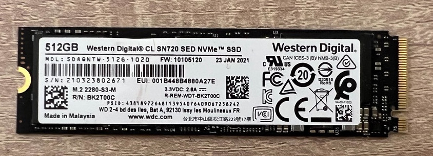

搜集零件
我的NAS方案
以下零件全部為「二手零件」
機殼：HP 800 G3 SFF（空機）
CPU：Intel i5-7500T
RAM：Samsung 16GB (x2)
SSD：WD NVMe 512GB
HDD：WD Gold 10TB (x2)
OS：Proxmox VE 8.1.3
VM1：TrueNas Scale 23.10.1
VM2：Debian 12.4.0
Docker安裝於VM2
使用Portainer管理Docker容器

機殼
規格：HP EliteDesk 800 G3 SFF（空機）
入手價：699元
HP 800 G3 SFF商用型主機「空機」（不含CPU,RAM,SSD,HDD）
賣家提供：機殼、主機板、電源供應器、CPU風扇、光碟機
此為特規主機板，與一般市售主機板大小不同；採用星型螺絲規格
支援intel第6代及第7代處理器；最高2400MT/s記憶體

CPU
規格：i5-7500T
入手價：1570元
Intel第七代i5處理器7500T（T代表「電力最佳化」版本，也就是低耗電版本）
低耗電版本雖然性能不比一般的版本高，但在電力消耗方面（可參考右圖TDP）明顯省電許多，適合作為迷你主機、NAS、伺服器的CPU選擇
RAM
規格：Samsung 16gb 2rx8 pc4 2666v
入手價：單條775元（兩條1550）
使用Samsung 16GB記憶體兩條，共32GB記憶體空間
購買時未注意到賣家標示2400,2666「雖機出貨」，幸好插上最高支援2400的主機板後仍然可以正常運作

